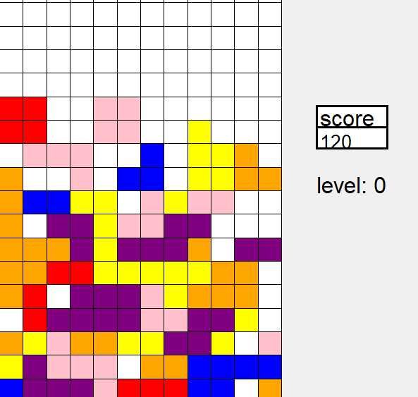
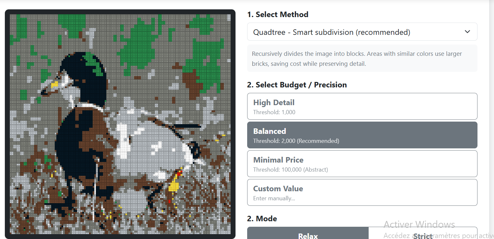
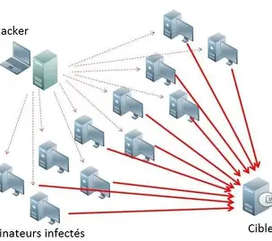
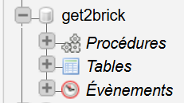
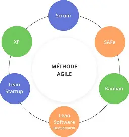
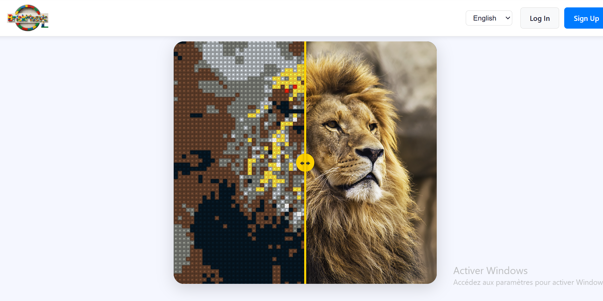
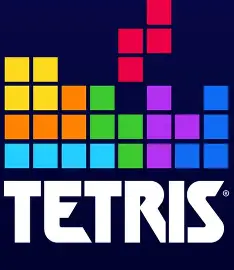
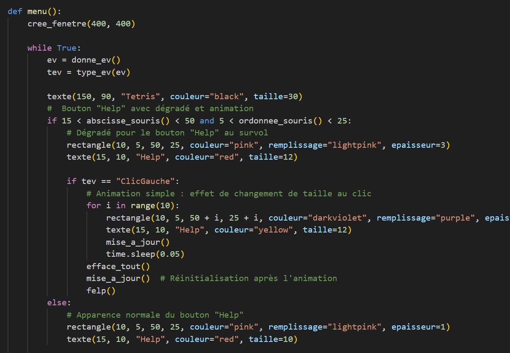
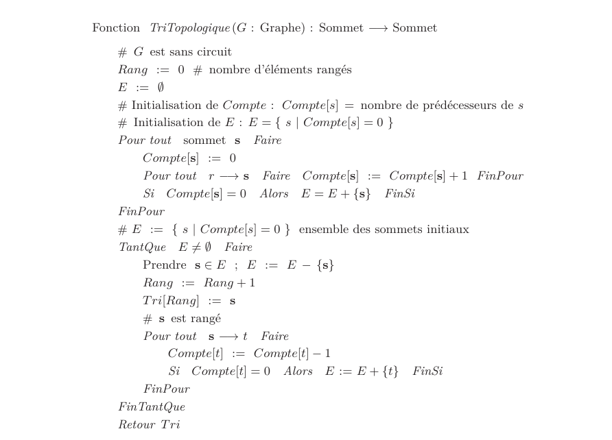

Pour cette compétence, il faut savoir développer, tester et rendre utilisables des programmes informatiques dans divers contextes.
Pendant ces deux années, toutes les autres compétences ont été développées autour du développement et de la réalisation de programmes et de solutions. Nous avons donc expérimenté beaucoup de langages et de problématiques, allant de la création de sites web à de petits jeux en Python.
voir la compétence plus en détail
Il s’agit de savoir évaluer et optimiser un programme pour une utilisation définie.
Afin d’améliorer notre évaluation d’un programme, nous avons souvent réalisé des calculs de complexité. L’efficacité des programmes était analysée, et nous avons étudié de nombreuses méthodes de programmation afin de pouvoir les utiliser lorsqu’elles permettent d’optimiser une solution.
voir la compétence plus en détail
Pouvoir créer une infrastructure de travail et la maintenir dans le temps.
Au cours de notre formation, nous avons appris à créer et gérer des réseaux informatiques, ainsi qu’à les sécuriser en comprenant les bases des attaques pouvant avoir lieu. Nous avons également acquis des connaissances sur les différents protocoles, aussi bien anciens que récents.
voir la compétence plus en détail
Pour cette compétence, la conception, l’administration et l’exploitation des ressources sont importantes.
La création de modèles conceptuels de données et de bases SQL a été très demandée. Nous avons créé des bases de données, mis en place des processus automatisés et appris à exploiter des données brutes.
voir la compétence plus en détail
Cette compétence consiste à pouvoir gérer toutes les étapes d’un projet afin de satisfaire les besoins du client.
Lors de mon cursus, j’ai eu l’occasion de faire partie d’une équipe en tant que chef de projet ou simple développeur, ce qui m’a permis de mieux comprendre comment gérer un projet en me mettant à la place des différents rôles.
voir la compétence plus en détail
Cette compétence consiste à savoir bien s’organiser au sein d’un groupe de travail.
Lors de nombreux projets, j’ai participé à beaucoup de travaux de groupe et ai dû me coordonner de différentes manières, telles que des canaux de discussion, GitHub, ainsi que diverses méthodes pour organiser et coordonner nos travaux personnels.
voir la compétence plus en détailPour cette compétence, il faut savoir développer, tester et rendre utilisables des programmes informatiques dans divers contextes.
Cette compétence est séparée en axes :

Le projet Tetris est un projet de première année à réaliser seul, où il était demandé de recréer de zéro le jeu Tetris en Python.
Lors de ce projet, j'ai pu commencer à acquérir des compétences liées à cette compétence, qui se sont améliorées avec le temps.

Lors de ce projet, j'ai pu acquérir certains réflexes, comme commenter son code ou le fragmenter en plusieurs fonctions pour éviter les répétitions et mieux déboguer et tester.
J'ai pu recréer le jeu Tetris ainsi que certaines fonctionnalités bonus, comme des blocs spéciaux ou différents modes de jeu.
L'ergonomie et l'apparence ont été réfléchies : des boutons simples et efficaces ont été mis en place dans le menu, avec une interface intuitive.
Mon grand défaut est ma manière de faire des tests de code que je ne conserve pas et qui ne couvrent pas les cas détaillés.
Cette compétence est séparée en axes :
J'ai aussi conscience des différents impacts qu'une solution peut avoir. Par exemple, chercher à avoir le programme le plus rapide et efficace n'est pas toujours facile.

Au cours de l'année, nous avons eu plusieurs cours nous présentant différents algorithmes et les méthodes pour calculer leur complexité. Nous avons essayé de concevoir des algorithmes de complexité linéaire et efficaces.
a
{kind=link}
{kind=link}